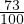

1% =
 = 0,01osa tervikust.
= 0,01osa tervikust.25% tähistab neljandikku täisosast, 50% poolt täisosast ja 75% kolme neljandikku täisosast.
Arvust protsendi leidmiseks tuleb arv antud protsendile vastava osaga läbi korrutada.
Näiteks 73% leidmiseks arvust 8 tuleb arv 8 läbi korrutada arvuga  = 0,73. Seega 73% kaheksast on 0,73 ⋅ 8 = 5,84.